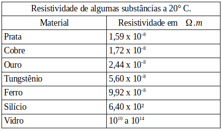
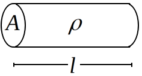

Aula10-79: Segunda lei de Ohm
Resistividade elétrica
É uma grandeza física que se assemelha muito a resistência elétrica. A diferença entre resistência e resistividade é que aquela diz respeito a um objeto (fio condutor, caneta, etc.), enquanto esta diz respeito a substâncias (cobre, hidrogênio, zinco, etc.). A unidade de medida para a resistividade é o:

Obs.: Por vezes, fala-se também em condutividade ou condutância específica, que é uma grandeza que indica o quão condutora uma substância é. O condutividade elétrica é justamento o inverso da resistividade:
A unidade de medida para a Condutividade é o:
Segunda lei de Ohm
|
A resistência de um condutor homogêneo e de secção transversal constante é diretamente proporcional ao seu comprimento e inversamente proporcional a sua área de secção: |
 |
Em que:
◦ é a resistividade do material que constitui o condutor;
◦ é o comprimento do condutor.
◦ é a área da secção transversal;